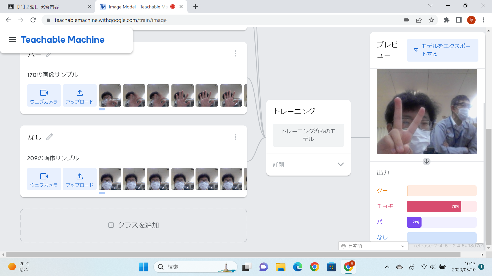
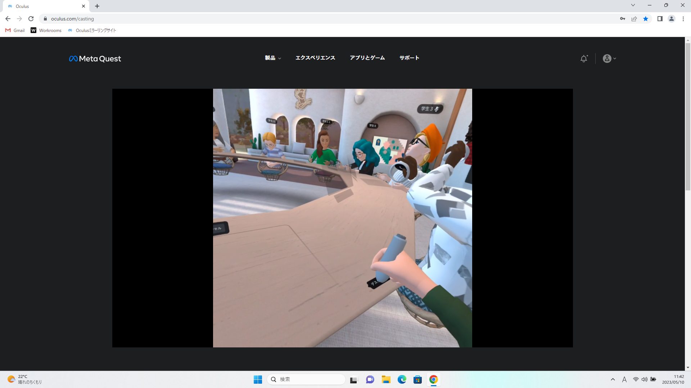

第2週目
2-1 １週目のレポートをHTMLで作る
１週目のレポート
1.内容
githubを通じて、一週目の授業で行った内容やそのことについての感想を記した。
ミスが多く、そのミスを直すのに時間がかかり、周りより完成に時間がかかった。
2.感想
僕にとってレポートを作る際に大変だと思った内容は写真を貼り付けることです。
commit changeを忘れたり、貼り付ける写真を間違えたりして、沢山失敗してようやくすばやくできるようになりました。
写真を貼ったり、沢山文字を書いても自身のサイトに反映させるとただ並んでいるだけという結果になってしまいました。
これからも自分で使う場面が多いと思うので徐々に使いこなせるように練習しようと思いました。
2-2 機械学習体験

1.内容
様々な場面で活躍している人工知能について学べるteachable machinesを使って画像を認識させ画像判別をした。
今回は、人工知能にじゃんけんの三パターンを判別させた。そのために、できるだけ多くの特徴を人工知能に覚えさせ判別の精度を上昇させた。
2.感想
中学生の時に体験授業として同じことをしたことがありましたが、そのときよりも認識させるパターンを増やし、より正確な判別をさせることができて楽しかったです。
しかし、まだまだ精度が低く、普段周りにある判別機械はたくさんの判別材料を認識させて、精度をあげていることがわかりました。
人工知能はまだまだわからないことが多いのでこれから細かいところまで学んでいこうと思いました。
2-3 VR（バーチャルリアリティー：Virtual Reality）会議室の体験

1.内容
ないようないよう
2.感想
かんそうかんそう